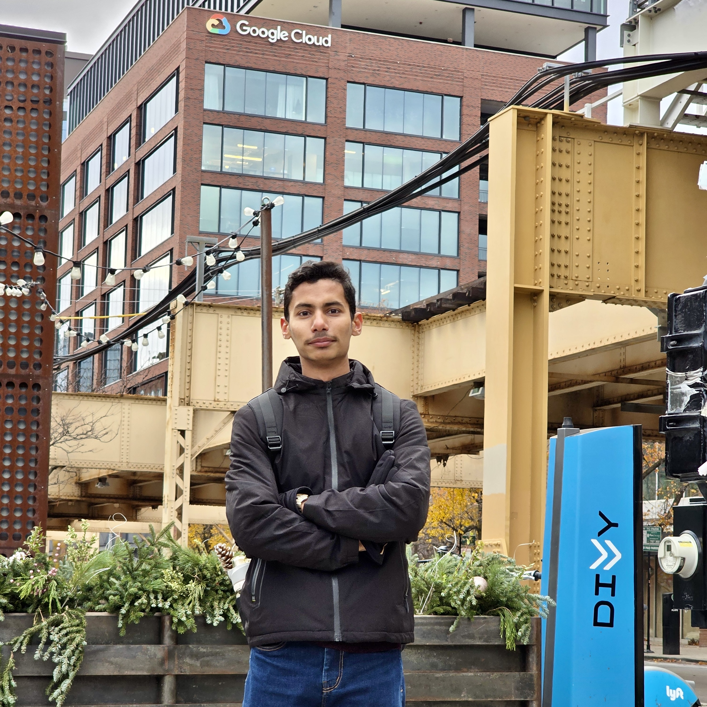

Researcher · Engineer · Teacher
PhD student at Iowa State University researching data attribution for RL-based LLM fine-tuning. Formerly a software engineer shipping production RAG and LLM-orchestration systems.
1,000+
Users Scaled
170/170
GRE Quant
65+
Students Mentored

Currently
PhD Student, Iowa State
About
Titles aside — PhD student, engineer, teaching assistant — I think of myself mostly as a student. I'm drawn to hard questions, whether they live in a gradient update or a history book, and I enjoy the slow work of understanding why things are the way they are.
I value good-faith discourse: laying out an argument, hearing the strongest case against it, and revising my view when the evidence calls for it. Teaching and mentoring come from the same habit — explaining an idea well is the best test of whether I actually understand it.
Away from the terminal, I read widely, return often to poetry, and listen to a lot of music. I also try to keep up with interesting new research in every field, computer science most of all.
"A wise man proportions his belief to the evidence."
David Hume
Curriculum Vitae
Iowa State University · Ames, IA
Research focus: Data Attribution for RL-Based LLM Fine-Tuning. Investigating how individual training examples influence LLM behavior during PPO/GRPO-style RLHF pipelines, adapting influence-function and gradient-similarity methods to score training samples, and modifying Hugging Face TRL's PPOTrainer internals for HPC-based GPU training.
Iowa State University · COMS 1270 & 3210
Mentor 65+ students across Python programming, algorithms, and computer architecture. Facilitate hands-on labs and provide individualized feedback on assembly, CPU architecture, and memory systems.
GoodCore · Karachi, PK
Led development of BriefingHelper, an AI data assistant enabling natural-language queries over internal data. Built FastAPI services handling 1,000+ concurrent users and a Streamlit microservice using LLM tool-calling and PgVector-based RAG, cutting hallucination by ~50%. Reduced LLM inference cost and latency by 40% via a two-stage call pipeline, and containerized services on AWS with Docker.
KoderLabs · Karachi, PK
Integrated REST APIs across three web and Android apps using React-Query, Next.js, React Native, and TypeScript. Built state management and modular component logic, reducing load times by ~20% through Agile, test-driven collaboration with design, backend, and QA teams.
NED University of Engineering & Technology · Karachi, PK
CGPA: 3.61/4.00. Co-founded QubtiCoders, a 100+ member competitive programming community, and ranked in the Top 15% of LeetCode users globally.
Track Record
170/170
GRE Quant, 94th %ile
Top 15%
LeetCode Ranking
95th %ile
Nat'l Quality Test
9/9
Harvard Puzzle Day
Section Leader, Stanford Code-in-Place 2025 — selected to lead and mentor global participants in Python and problem-solving fundamentals.
8 LeetCode profile badges recognized for advanced problem-solving and algorithmic proficiency.
Co-founder, QubtiCoders — a 100+ member competitive programming community at NED University.
Graduate Teaching Assistant mentoring 65+ students in Python, algorithms, and computer architecture.
Technical Profile
PyTorch, Hugging Face TRL, RLHF (PPO/GRPO), LangGraph, RAG, pgvector, LLM tool-calling & prompt engineering.
FastAPI, Python, Next.js, React, React Native, TypeScript, Docker, AWS, GCP Cloud Run, PostgreSQL, HPC/GPU training.
Advanced DSA, competitive programming (Top 15% LeetCode), mathematical optimization, and teaching 65+ students as a Graduate TA.
Selected Work
A selection of AI systems and platforms I've built — from multi-agent compliance automation to hackathon-winning safety pipelines.
Multi-agent AI platform (PermitOS) that automates construction permit review by coordinating agents for jurisdictional, building-code, and site compliance analysis using LangGraph orchestration.
LangGraph · FastAPI · Multi-Agent Systems
Multimodal AI pipeline fusing live flight, weather, and video data via Qwen3-VL on AMD MI300X GPUs — AMD Developer Cloud Hackathon — achieving sub-4ms detection latency with an explainable rerouting agent at >99% rules accuracy.
ROCm / HIP · Qwen3-VL · Real-Time Inference
AI chatbot that automates AWS/GCP workflows, letting non-technical users deploy VMs via natural language — cutting deployment time by 70% and steps from 11 to 4.
Next.js · FastAPI · Zilliz Cloud · PostgreSQL
Agentic grading system for short scientific answers, modeling assessment as semantic entailment. Benchmarked symbolic, transformer, and LLM-based approaches under low-resource settings.
NLP · Agentic AI · Evaluation
Beyond the Code
Building and mentoring communities has been a constant thread alongside my technical work.
"Being guided by Mr. Sibtain Ahmed – a very enthusiastic and friendly Team Leader – helped me quickly integrate into the class right from the very first sessions. He not only provided detailed and clear instructions on how to complete assignments throughout the course but also always tried to bridge the gap between group members by regularly checking in on everyone's situation, sharing stories, and encouraging everyone to talk about their personal interests to find common ground."
"Sibtain's commitment as a co-founder for QubitCoders (Competitive Programming Community) was commendable for delivering webinars and organizing programming competitions for 300 students. His enthusiasm was grounded in selfless initiative to create awareness among peers and juniors to upskill and compete on national and international competitions."
Student Feedback
Being a Teaching Assistant is about more than grading. It's about mentorship and supporting the next generation of engineers.
"Sibtain is absolutely the best TA I've ever had! He's super helpful and supportive, both in class and outside of it. He really knows how to make things clear and easy to understand."
"I had a really great experience with you as a TA in COMS 1270. You were always approachable, patient, and genuinely invested in helping students understand the material."
Off the Clock
My tastes are eclectic by design. A good book, a well-turned verse, or an argument that changes my mind are some of my favorite things.
Poetry most of all. I value writing that says a lot in very few words.
A constant companion, across genres and traditions.
I enjoy honest debate and try to hold my beliefs up to the strongest counterarguments I can find.
I follow interesting new work across disciplines, not just computer science.
On the Bookshelf
Currently Reading
Prisoners of Geography
Tim Marshall
Up Next
The Righteous Mind
Jonathan Haidt
The Chaos Machine
Max Fisher